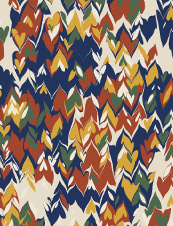
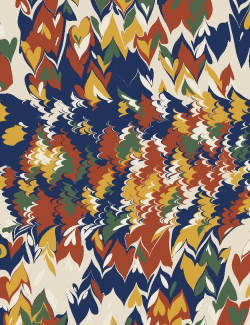
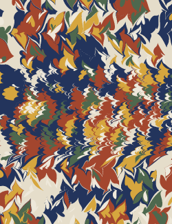

i. battal 520 damla, beş renk sırayla serpilir; her damla öncekileri iter

ii. gel-git 22 çizgi: biz aşağı, yukarı, aşağı; aralık 46

iii. tarak orta kuşakta 20 diş, soldan sağa bir kez; her dişin çekişi ±%25

iv. ikinci gel-git 10 yatay çizgi, aralık 130, yavaş ve geniş
Hiçbir piksel boyanmadı. Her nokta, işlemler sondan başa doğru geri alınarak kendi damlasına kadar izlendi: bir damla, dışındaki her noktayı merkezinden uzağa kapalı bir formülle iter, biz ve tarak ise çizgiye yakın olanı çok, uzak olanı az sürükler. Damla yerleri, yarıçaplar ve dişlerin çekişi tohum 20261119 ile çekildi. Aynı tohum aynı kâğıdı verir; kâğıdın neye benzeyeceğini vermez.
lacivert 120 · aşı 100 · sarı 90 · yeşil 70 · beyaz 140 damla 572 işlem · 1000 × 1300 · her piksel 2 × 2 örnekle damla ve çizgi dönüşümleri: Lu, Jaffer, Jin, Zhao & Mao, «Mathematical Marbling», IEEE CG&A, 2012
020 · 1640 × 1520
Gel-Git
hesaplanmış ebru
malzeme: 520 tohumlu boya damlası ile 52 biz/tarak çizgisinin kapalı formüllü dönüşümleri, her piksel geriye doğru kendi damlasına izlenerek